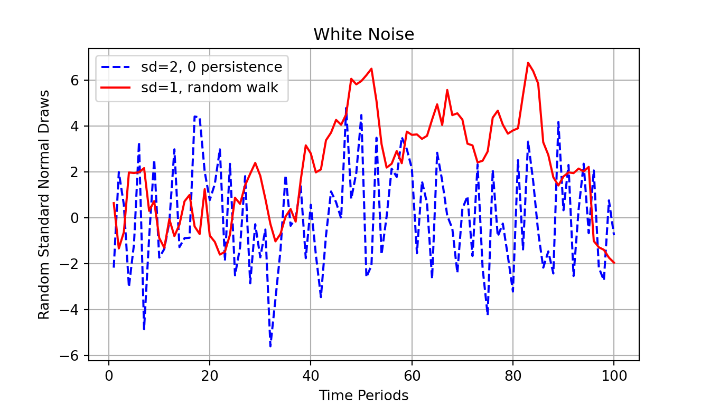
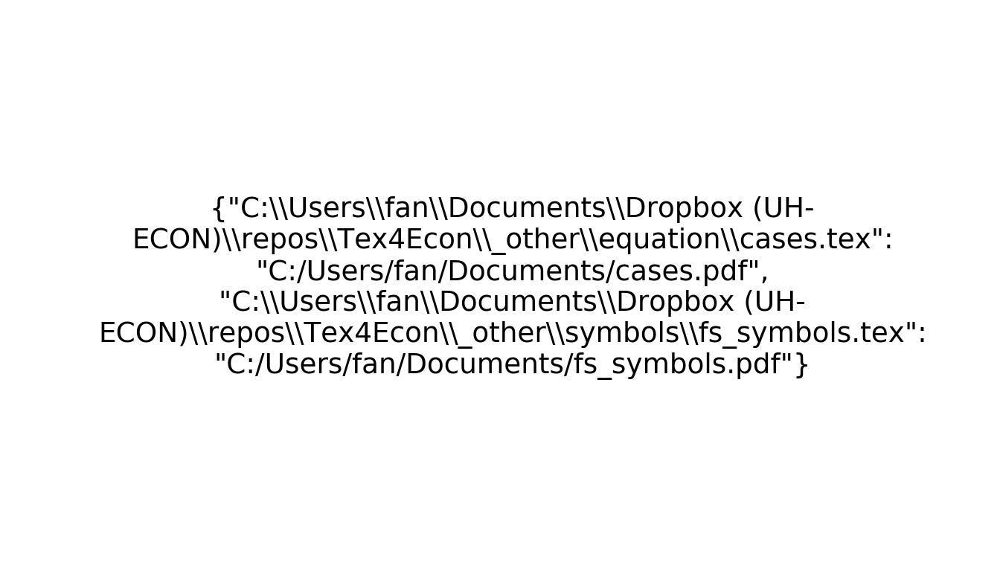

Chapter 2 Tables and Graphs
2.1 Matplotlib Base Plots
2.1.1 Line and Scatter Plots
Go back to fan’s Python Code Examples Repository (bookdown site).
2.1.1.1 Plot Random Walk and White Noise Jointly
Given x and y coordinates, plot out two lines. see matplotlib.pyplot.plot. Here we will plot out the extremes of AR(1), white noise (no persistence), and random walk (fully persistent shocks).
# Import Packages
import numpy as np
import matplotlib.pyplot as plt
# Generate X and Y
np.random.seed(123)
ar_fl_y1_rand = np.random.normal(0, 2, 100)
ar_fl_y2_rand = np.cumsum(np.random.normal(0, 1, 100))
ar_it_x_grid = np.arange(1,len(ar_fl_y1_rand)+1)
# Start Figure
fig, ax = plt.subplots()
# Graph
ax.plot(ar_it_x_grid, ar_fl_y1_rand,
color='blue', linestyle='dashed',
label='sd=2, 0 persistence')## [<matplotlib.lines.Line2D object at 0x0000021209305388>]ax.plot(ar_it_x_grid, ar_fl_y2_rand,
color='red', linestyle='solid',
label='sd=1, random walk')
# Labeling## [<matplotlib.lines.Line2D object at 0x0000021209305348>]ax.legend(loc='upper left')## <matplotlib.legend.Legend object at 0x0000021209305E88>plt.ylabel('Random Standard Normal Draws')## Text(0, 0.5, 'Random Standard Normal Draws')plt.xlabel('Time Periods')## Text(0.5, 0, 'Time Periods')plt.title('White Noise')## Text(0.5, 1.0, 'White Noise')plt.grid()
plt.show()
2.1.2 Text Plot
Go back to fan’s Python Code Examples Repository (bookdown site).
2.1.2.1 Plot Text
Plot Text as Image. Create text with different alignment and rotation.
# Import Packages
import matplotlib.pyplot as plt
import textwrap
import json
# Dict of String to String
dc_path = {'C:\\Users\\fan\\Documents\\Dropbox (UH-ECON)\\repos\\Tex4Econ\\'
'_other\\equation\\cases.tex':
'C:/Users/fan/Documents/cases.pdf',
'C:\\Users\\fan\\Documents\\Dropbox (UH-ECON)\\repos\\Tex4Econ\\'
'_other\\symbols\\fs_symbols.tex':
'C:/Users/fan/Documents/fs_symbols.pdf'}
st_dc_path = textwrap.fill(json.dumps(dc_path), width = 70)
# Start Plot
fig, ax = plt.subplots()
# Text Plot
ax.text(0.5, 0.5, st_dc_path,
horizontalalignment='center',
verticalalignment='center',
fontsize=14, color='black',
transform=ax.transAxes)
# Labeling## Text(0.5, 0.5, '{"C:\\\\Users\\\\fan\\\\Documents\\\\Dropbox (UH-\nECON)\\\\repos\\\\Tex4Econ\\\\_other\\\\equation\\\\cases.tex":\n"C:/Users/fan/Documents/cases.pdf",\n"C:\\\\Users\\\\fan\\\\Documents\\\\Dropbox (UH-\nECON)\\\\repos\\\\Tex4Econ\\\\_other\\\\symbols\\\\fs_symbols.tex":\n"C:/Users/fan/Documents/fs_symbols.pdf"}')ax.set_axis_off()
plt.show()